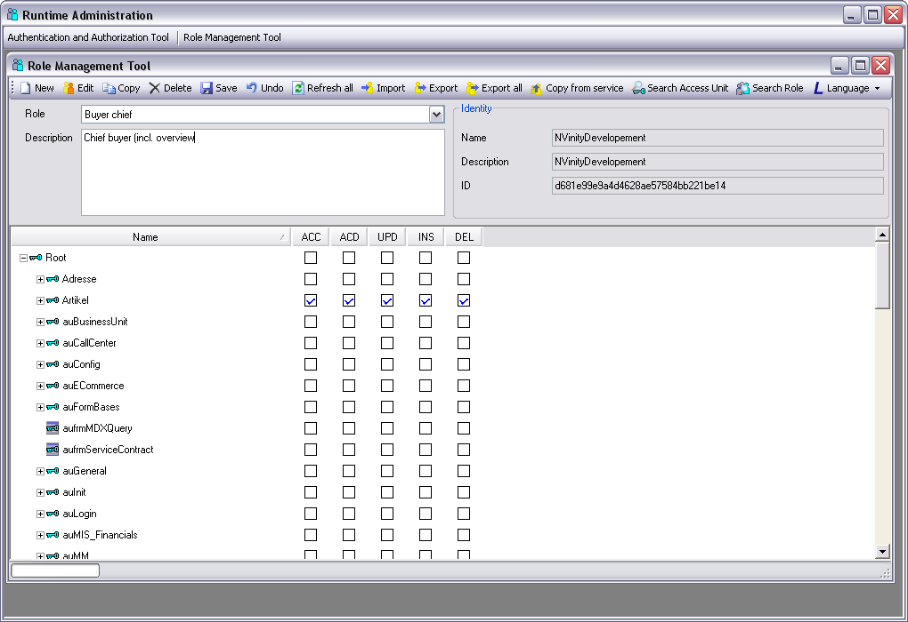
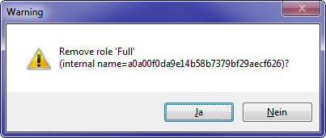
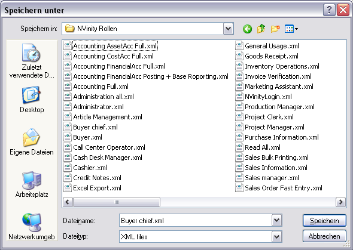
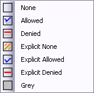

Rollen verwalten / Role Management Tool
Allgemeines
Die Rollen, die Sie mit dem Role Management Tool verwalten, werden im Authentication Service gespeichert. Wenn eine Endanwendung gestartet wird, erhält diese vom Authentication Service nicht nur Informationen über den authentifizierten Benutzer, sondern auch die aktuellen Rollendefinitionen.
Note
Role Management Tool und Authentication and Authorisation Tool sind zwei unabhängige Softwarekomponenten. Das hat zur Folge, dass das Authentication and Authorisation Tool nicht automatisch erkennt, dass über das Role Management Tool eine neue Rolle angelegt wurde. In diesem Fall müssen im Authentication and Authorisation Tool alle Daten mit der Funktion Reload All neu eingelesen werden.
Role Management Tool starten
Wenn Sie das Role Management Tool starten, erscheint folgendes Fenster.

In diesem Fenster wählen Sie aus, für welchen Service Sie Rollen bearbeiten wollen.
Anmerkung: In diesem Zusammenhang werden unter Service alle Programme verstanden, die sich am Authentication Service registrieren und diesen zur Authentifizierung verwenden. Insbesondere sind das auch die mit Framework Studio erstellten Endanwendungen (Applications).
In der Tabelle werden alle Services aufgelistet, die sich am Authentication Service registriert haben.
In der Spalte Name wird der Name des Services angezeigt.
In der Spalte Roles managed by sind folgende Werte möglich:
- Service: Dieser Service verwaltet seine Rollen selbstständig. Die Rollen können also nicht durch einen Administrator definiert werden. In diesem Fall kennt der Authentication Service keine Access Unit Hierarchy.
Anmerkung: Alle Applications, die mit einer Framework Studio Version älter als 3.0 erstellt wurden, gehören zu dieser Kategorie. Rollen dieser Applications müssen weiterhin mit der alten Runtime Administration verwaltet werden.
- User: Die Rollen dieses Services können durch einen Administrator bearbeitet werden. Dieser muss dazu die Rolle Manage Roles am Authentication Service besitzen.
In der Spalte Description wird die für den Service hinterlegte Beschreibung angezeigt.
In der Spalte ID wird der Schlüssel angezeigt, durch den ein Service eindeutig identifiziert wird.
Mit dem Button OK bestätigen Sie, dass Sie Rollen für den ausgewählten Service bearbeiten möchten.
Mit dem Button Cancel brechen Sie die Anmeldung am Role Management Tool ab,
Elemente im Hauptfenster
Das Hauptfenster sieht folgendermaßen aus:

Unter der Taskleiste befindet sich links die Combobox Role. In dieser Combobox wählen Sie aus, welche Rolle Sie bearbeiten möchten.
Im Textfeld darunter wird die Beschreibung zu der ausgewählten Rolle angezeigt.
In der Gruppierung Identity werden alle Informationen zu der Identität des Services angegeben, für den die Rollen konfiguriert werden. Name ist der Name, der im Authentication and Authorisation Toolfür den Service angezeigt wird. Die Description enthält die Beschreibung des Services, die im Authentication and Authorisation Tool im Tooltip des Dienstes angezeigt wird. Mit der ID identifiziert sich der Service eindeutig.
Unter diesen Elementen befindet sich der Access Unit Tree in tabellarischer Form. Dieser stellt die Rechte der ausgewählten Rolle dar.
In der ersten Spalte werden alle Access Units mit einem Symbol in ihrer hierarchischen Baumstruktur dargestellt. Das Symbol für Access Units ist der Schlüssel  das Symbol für Form Access Units der Schlüssel auf einem Form .
das Symbol für Form Access Units der Schlüssel auf einem Form .
Die weiteren Spalten stellen die einzelnen Zugriffsartendar, für die Rechte vergeben werden können. Die einzelnen Zugriffsarten sind:
ACC (Access): Daten lesen bzw. Form öffnen
ACD(Access derived): Betrifft nur Access Units von Forms: Diese Zugriffsart regelt, ob Ableitungen des Forms dieser Access Unit geöffnet werden dürfen
UPD (Update): Vorhandene Daten aktualisieren
INS (Insert): Neue Daten einfügen
DEL (Delete): Daten löschen
Rechte für die einzelnen Zugriffsarten werden durch besondere Checkboxen dargestellt. Die Checkboxen können folgende Werte annehmen:
 Explizit erlaubt:
Diese Zugriffsart wird explizit erlaubt.
Explizit erlaubt:
Diese Zugriffsart wird explizit erlaubt.
 Hierarchisch erlaubt:
Diese Zugriffsart wird automatisch erlaubt, weil diese Access Unit
ein Unterelement einer anderen Access Unit ist, für die das Recht für diese Zugriffsart erteilt wurde.
Hierarchisch erlaubt:
Diese Zugriffsart wird automatisch erlaubt, weil diese Access Unit
ein Unterelement einer anderen Access Unit ist, für die das Recht für diese Zugriffsart erteilt wurde.
Explizit verboten: Diese Zugriffsart wird explizit verboten.
 Hierarchisch verboten:
Diese Zugriffsart wird automatisch verboten, weil diese Access Unit ein Unterelement einer anderen Access Unit ist, für die das Recht für diese Zugriffsart verboten wurde.
Hierarchisch verboten:
Diese Zugriffsart wird automatisch verboten, weil diese Access Unit ein Unterelement einer anderen Access Unit ist, für die das Recht für diese Zugriffsart verboten wurde.
Explizit keine Angabe: Zu dieser Zugriffsart wird explizit keine Angabe gemacht.
 Keine Angabe:
Zu dieser Zugriffsart wird keine Angabe gemacht, es wurde auch kein Recht durch die Hierarchie geerbt.
Keine Angabe:
Zu dieser Zugriffsart wird keine Angabe gemacht, es wurde auch kein Recht durch die Hierarchie geerbt.
Sie können den Wert der Checkbox durch Anklicken mit der linken Maustaste oder über das Kontextmenü ändern.
Wenn ein Benutzer durch verschiedene Rollen unterschiedliche Angaben zu einer Zugriffsart bekommt, wirkt das Recht mit der höchsten Priorität.
Die höchste Priorität hat Explizit verboten, danach folgen Hierarchisch verboten, Explizit erlaubt, Hierarchisch erlaubt und mit niedrigster Priorität Keine Angabe und Explizit keine Angabe.
Note
Access Units können an mehreren Stellen im Hierarchiebaum eingehängt sein. In einem solchen Fall hat innerhalb der Rolle Hierarchisch erlaubt höhere Priorität als Hierarchisch verboten.
Im Kontextmenü einer Access Unit werden unter dem Menüpunkt Parents alle Access Units aufgelistet, an denen diese Access Unit im Hierarchiebaum eingehängt ist. Durch Anklicken wird die entsprechende Access Unit ausgewählt.
Im Access Unit Tree wird mit der Multiplikationstaste * der komplette Teilbaum der ausgewählten Access Unit aufgeklappt, mit der Subtraktionstaste - wird der Teilbaum wieder kollabiert.
Mit der Tastenkombination <Strg+F> wird die Suche nach Access Units geöffnet.
Im Tool Tipp einer Access Unit im Access Unit Tree werden der technische Name der Access Unit, ihre ID und ggf. die hinterlegte Beschreibung angezeigt.
Rollen verwalten
Mit dem Button New legen Sie eine neue Rolle an.

Name und Beschreibung der Rolle können angegeben werden. Außerdem haben Sie beim Anlegen einer neuen Rolle einmalig die Möglichkeit, den zufällig generierten Schlüssel, mit dem die Rolle eindeutig identifiziert wird (Internal identifier), zu ändern. Dies ist nur dann sinnvoll, wenn die Rolle von Framework Studio Applikationen älter als 3.4 verwendet werden soll. Dort wird als Rollenname der Internal identifier benutzt.
Mit dem Button Edit  können Sie Name und Beschreibung der ausgewählten Rolle ändern.
können Sie Name und Beschreibung der ausgewählten Rolle ändern.

Mit dem Button Copy  legen Sie eine neue Rolle an, bei der alle Einstellungen im Access Unit Tree von der zuvor ausgewählten Rolle kopiert werden.
legen Sie eine neue Rolle an, bei der alle Einstellungen im Access Unit Tree von der zuvor ausgewählten Rolle kopiert werden.

Mit dem Button Delete  löschen Sie die ausgewählte Rolle.
löschen Sie die ausgewählte Rolle.

Mit dem Button Save  speichern Sie die aktuellen Einstellungen der ausgewählten Rolle am Authentication Service.
speichern Sie die aktuellen Einstellungen der ausgewählten Rolle am Authentication Service.
Mit dem Button Undo  machen Sie alle Änderungen an der ausgewählten Rolle seit dem letzten Speichern oder Laden rückgängig.
machen Sie alle Änderungen an der ausgewählten Rolle seit dem letzten Speichern oder Laden rückgängig.
Mit dem Button Refresh all  aktualisieren Sie alle Rollendefinitionen am Authentication Service. Der Fortschritt der Aktualisierung wird in der Progressbar in der linken unteren Ecke des Hauptfensters angezeigt.
aktualisieren Sie alle Rollendefinitionen am Authentication Service. Der Fortschritt der Aktualisierung wird in der Progressbar in der linken unteren Ecke des Hauptfensters angezeigt.
Note
Der Authentication Service hält die Rollendefinitionen selbstständig aktuell. Daher besteht keine Notwendigkeit, diese Funktion manuell aufzurufen.
Mit dem Button Import importieren Sie eine Rolle aus einer XML-Datei. Im Auswahldialog können Sie auch mehrere Dateien auswählen und somit mehrere Rollen in einem Schritt importieren.

Mit dem Button Export  exportieren Sie eine Rolle in eine XML-Datei.
exportieren Sie eine Rolle in eine XML-Datei.

Mit dem Button Export all  exportieren Sie alle Rollen in einen auszuwählenden Ordner.
exportieren Sie alle Rollen in einen auszuwählenden Ordner.

Mit dem Button Copy from service  kopieren Sie Rollen von einem anderen Service in den aktuellen Service.
kopieren Sie Rollen von einem anderen Service in den aktuellen Service.


Im Dialog Role Management Tool – Service Selector wählen Sie (analog zur Anmeldung am Role Management Tool) den Service aus, von dem die Rollen kopiert werden sollen.
Note
In diesem Dialog werden nur Services aufgelistet, bei denen die Rollen nicht vom Service selbst verwaltet werden, also nur Role managed by User. Das bedeutet, dass Sie diese Funktion nicht verwenden können, um Rollen von Applikationen zu kopieren, die mit einer Framework Studio Version alter als 3.0 erstellt wurden. Wollen Sie Rollen von einer älteren Applikation übernehmen, müssen Sie diese zunächst mit dem alten Role Management Tool an der alten Applikation in Dateien exportieren und anschließend mit der aktuellen Version des Role Management Tools wieder importieren.
Mit dem Button Search Access Unit  suchen Sie im Access Unit Tree nach Access Units.
suchen Sie im Access Unit Tree nach Access Units.

Im Textfeld Search for geben Sie den Suchtext an. Im Bereich Search in geben Sie an, wo nach diesem Text gesucht werden soll:
Name: Technischer Name der Access Unit, z.B. aufrmArticle
Label: Bezeichnung, die im Access Unit Tree angezeigt wird
Description: Beschreibung, die für die Access Unit hinterlegt wurde
ID: ID, die die Access Unit eindeutig identifiziert
Mit der Checkbox Search Up legen Sie fest, ob von der aktuellen Position im Access Unit Tree aus aufwärts gesucht werden soll.
Im Bereich Permissions kann nach bestimmten Zugriffsrechten gesucht werden. Durch setzen der Checkboxen Access, Access Derived, Update, Insert oder Delete werden Vergleiche für die jeweilige Zugriffsart aktiviert. Für jede Zugriffsart kann der Wert mit einem der folgenden verglichen werden:

In der folgenden Übersicht wird für jede Option angegeben, auf welche Werte die Option einschränkt:
None: None und Explicit None
Allowed: Hierarchic Allowed und Explicit Allowed
Denied: Hierarchic Denied und Explicit Denied
Explicit None: Explicit None
Explicit Allowed: Explicit Allowed
Explicit Denied: Explicit Denied
Grey: Alle Rechte, jedoch nur die, die durch eine verwendete Lizenz verboten sind. Das entspricht allen Checkboxen, die mit grauem Hintergrund dargestellt werden.
Ändern Sie das Recht durch Anklicken oder über das Kontextmenü der Rechte-Checkbox.
Mit dem Button Find Next wird die Suche gestartet, mit dem Button Done beenden Sie die Suche und schließen das Suchfenster
Die Suchergebnisse werden im Access Unit Tree blau und unterstrichen dargestellt.
Mit dem Button Show List werden alle Access Units, die den Suchkriterien entsprechen in einer Liste angezeigt.

In diesem Dialog kann mit dem Button Copy to clipboard (Tastenkombination <Strg + C>) die gesamte Liste mit Suchkriterien in die Zwischenablage kopiert werden. Mit dem Button Copy selected to clipboard werden alle ausgewählten Einträge in die Zwischenablage kopiert. Durch Doppelklick auf einen Eintrag wird dieser im Access Unit Tree ausgewählt.
Mit dem Button Search Roles  im Role Management Tool suchen Sie für die aktuell ausgewählte Access Unit nach allen Rollen, in denen für diese Access Unit die angegebenen Rechte gesetzt sind.
im Role Management Tool suchen Sie für die aktuell ausgewählte Access Unit nach allen Rollen, in denen für diese Access Unit die angegebenen Rechte gesetzt sind.

In der Gruppierung Access Unit werden alle Informationen zur ausgewählten Access Unit angezeigt. In der Gruppierung Permissions können für alle Zugriffsarten (Access, Access Derived, Update, Insert und Delete) Rechte (explizit oder implizit erlaubt oder verboten), angegeben werden (siehe auch Access Unit Search).
Mit dem Button Search Roles werden alle Rollen angezeigt, in denen die angegebenen Rechte für die Access Unit gesetzt sind. Dazu muss mindestens ein Recht gesetzt sein.

In diesem Dialog kann mit dem Button Copy to clipboard (Tastenkombination <Strg + C>) die gesamte Liste mit Suchkriterien in die Zwischenablage kopiert werden. Mit dem Button Copy selected to clipboard werden alle ausgewählten Einträge in die Zwischenablage kopiert. Durch Doppelklick auf eine Rolle wird diese im Hauptfenster ausgewählt.
Mit der Combobox Language  wird die Sprache festgelegt, in der die Access Units im Access Unit Tree dargestellt werden.
wird die Sprache festgelegt, in der die Access Units im Access Unit Tree dargestellt werden.

Neben allen Sprachen des Defaultpackages steht dort der Eintrag